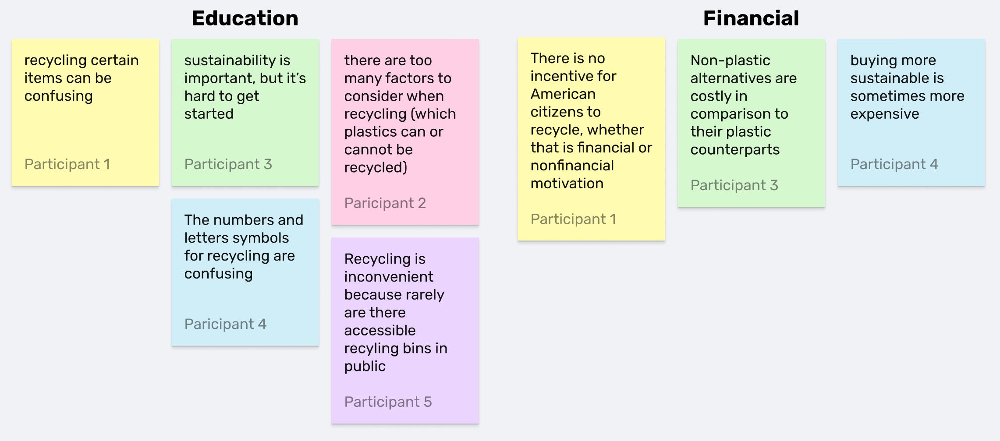
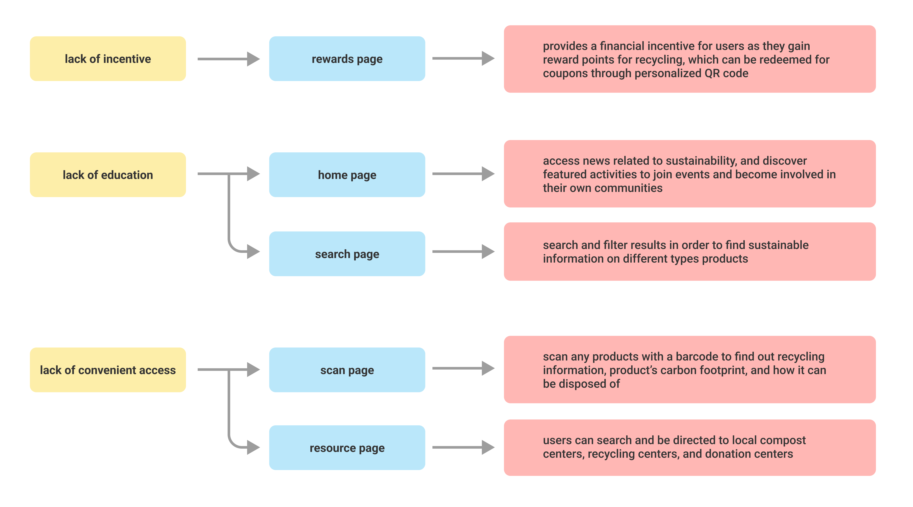
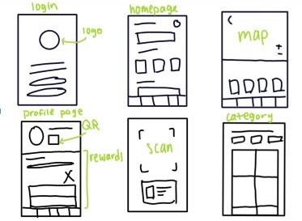
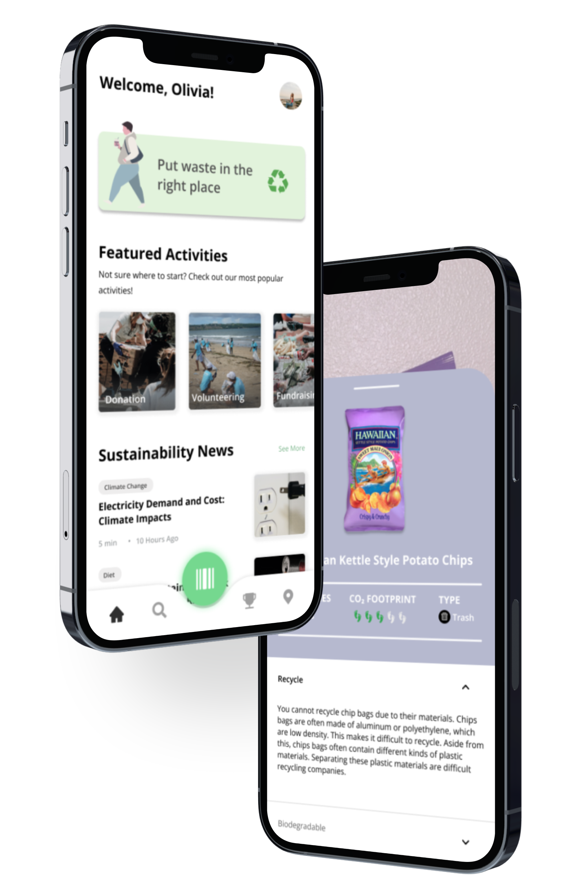
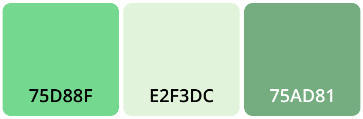

Being eco-friendly isn’t that simple for everyone and we know that. Carbonology is an app that provides convenient access to important sustainability information of common household products and aims to help consumers lead a more sustainable life.
Award: Second Place at UCI's Impact 2022 Design-a-thon
The Problem
With the lack of education, convenient access, and financial incentive to recycle, taking a step towards a sustainable lifestyle may seem daunting to people. Identifying recyclable items can be confusing, and finding nearby recycling facilities can pose an inconvenience. There is also no encouragement or motivation to alter their behavior to begin recycling.
User Research
"...94% of Americans support recycling, and 74% say it should be a top priority. But only about 35% of people actually recycle." - American Broadcasting Company (ABC)
Surveys
To gather more information, I started off with surveying people on their habits of recycling and conscious purchases. I asked them questions about:
The frequency of which they recycle
Their perspective on sustainability
Their consideration of carbon footprint when purchasing items
Their thoughts on why Americans do not recycle
Affinity Mapping
I complied participants' survey responses and categorized two common problems I noted individuals faced: education and financial issues. I used an affinity map to organize their thoughts.

Secondary Research
To better understand the attitudes of people who recycle, I explored studies and articles on their perceptions towards recycling and learned that financial incentives can affect behavior towards recycling and there is confusion towards the process of recycling.
"Financial incentives are more effective for among consumers with lower levels of environmental knowledge, while nonfinancial incentives are more effective among consumers with higher levels" (Li, 2021)
“While done with good intentions, many Americans are practicing aspirational recycling – tossing things into recycling bins that they think should be recycled, rather than what can be recycled.” - Dr. Paul Gilman, chief sustainability officer at Covanta
After summarizing the data and research, we focused on addressing the three main factors that contributed to the lack of recycling:
No incentive to recycle
Lack of education
Lack of convenient access
The Solution?
How might we design an app that encourages the users to work sustainably, and allows them to easily check the product's sustainable information and resources.

Ideation
Low Fidelity
After much discussion about what features we wanted to include, I drafted a quick sketch that encompassed everyone's ideas. I wanted to ensure this app included effective features that addressed the factors of incentives, education, and convenient access to lack of recycling.

Visual Design
Carbonology primarily uses green due to the color's frequent association with the environment. The app also includes various tints and shades of green and purple to create a calming color palette with cool tone colors. Open Sans was chosen for its easy readability.


High Fidelity
Stay Updated
Stay updated on community events to participate in and news of current events.
Learn more
Discover a product's recyclability, biodegration, carbon footprint, and alternative choices.
Scan for more
For convenience, scanning the product's barcode to learn about its level of sustainability and alternative choices.
Rewards
Earn points through recycling and redeem coupons to use for items on your next grocery shopping trip.
Nearby
Explore local recycling, compost, and donation centers close by.
Reflection
Importance of research
In the user research portion of the project, I learned the importance of utilizing secondary research in your design. While interviews can help give you a good idea about the components of your design, there will be details that may be left out. When ideating solutions regarding science and sustainability, secondary research can provide scientific information about the user, and cover the gaps from primary research.
Collaboration
Because the given prompt was broad, the ideation stage of this project was challenging to navigate through. Each teammate had a unique pitch for the app. As a result, this method of collaboration was able to consider and address the issues that users faced. Without the inclusion of all ideas, the app would not have developed as thoroughly to expand on the problems regarding recycling. This collaboration demonstrated to me the importance of taking into account your teammates' thoughts and perspectives to further the design and achieve project goals.